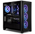

Hobbies

Schlagzeug spielen
Seit 2018 spiele ich schon Schlagzeug, in dieser Zeit hat sich das
zu meinem Haupt-Hobby entwickelt. Es ist mir wichtig, dass ich
weiterhin musikalisch bleibe.

PCs zusammenbauen
Seit 2021 beschäftige ich mich aktiv mit dem Zusammenbauen von
PCs. Dazu habe ich auch 2023 mit einem Kollegen von mir ein
Projekt gestartet, in dem wir gebrauchte Teile gesammelt haben,
daraus einen PC zusammenbauten und an dessen einem anderen Video
vertrauten.
Mit Freunden rausgehen
Auch wenn es kein richtiges Hobby ist, verbringe ich viel von Zeit
mit meinen Kollegen - entweder beim Gamen oder beim zusammen etwas
unternehmen.